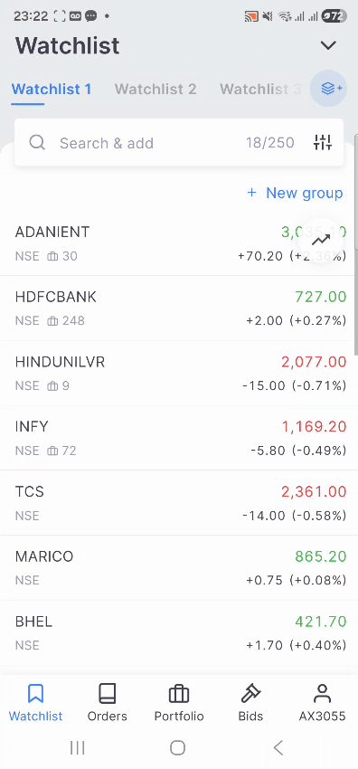
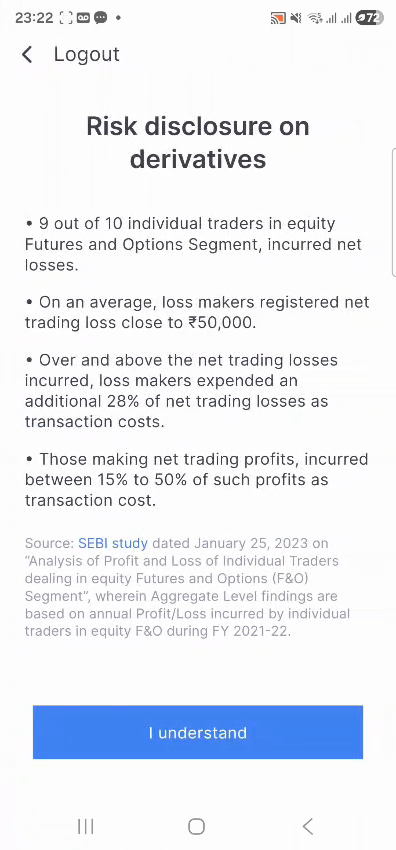
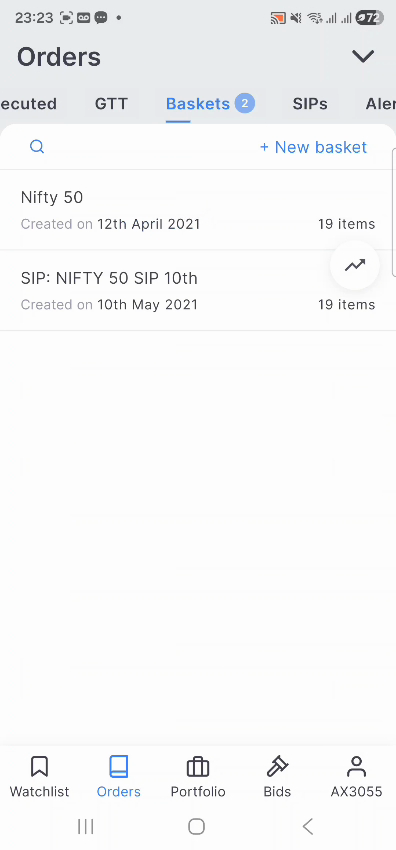
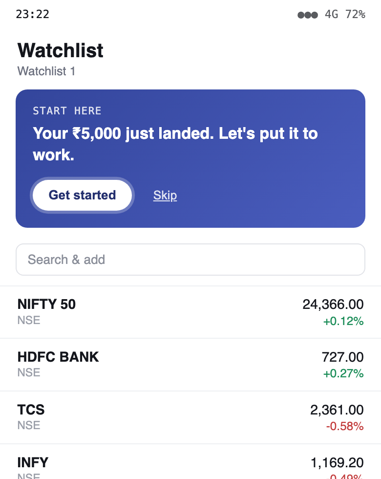
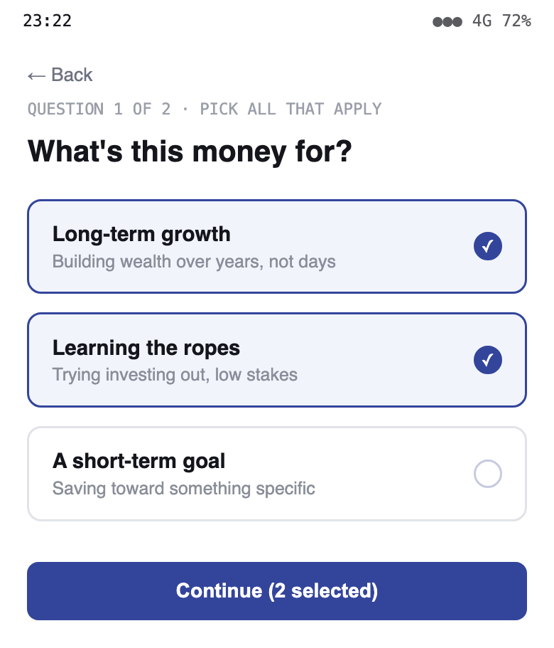
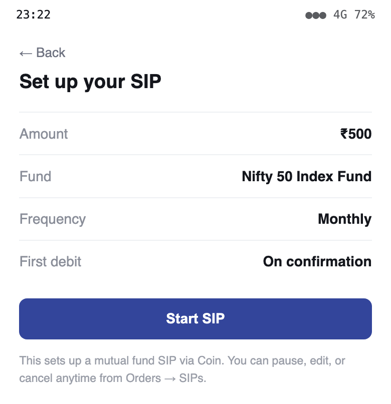
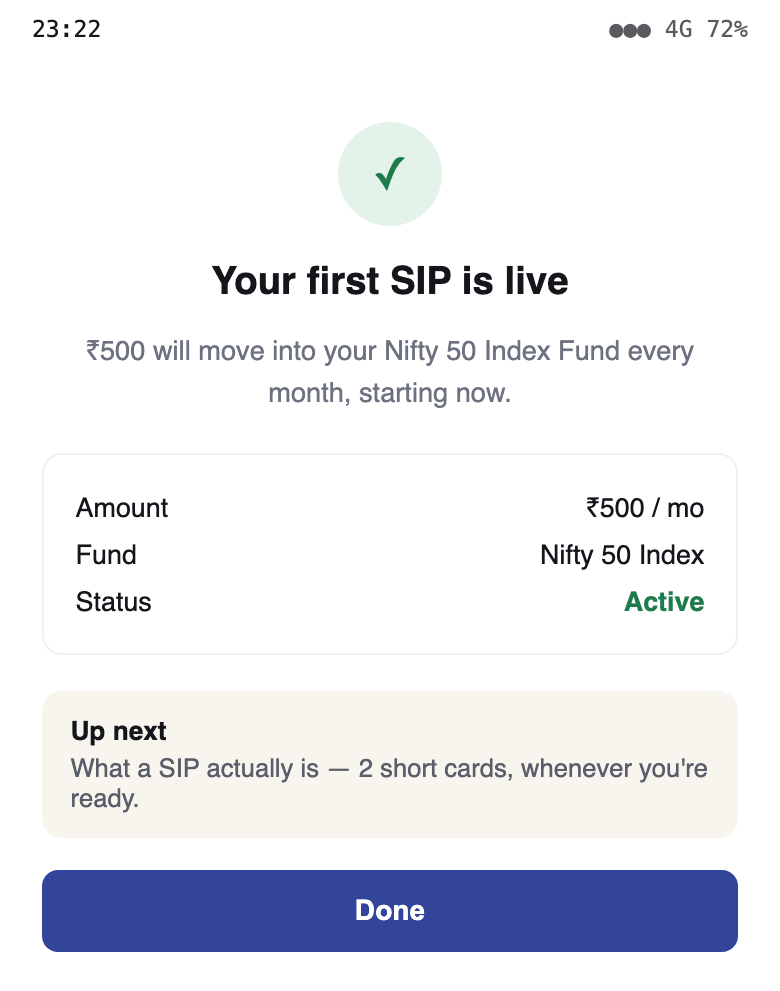

Why deposits stall before the first trade — and why the fix is mostly not AI.
A first-time investor completes KYC, deposits money — and a large share never place a first trade. This is not a Zerodha-specific quirk; it's a structural pattern across Indian retail investing.
The gap isn't awareness or access — both are effectively solved. It's what happens in the seconds after money lands with nowhere obvious to go.
Walked a live Kite account rather than assume the flow. Three screens tell most of the story.



Ranked by leverage — the top two explain most of the drop-off.
AI is not the primary lever. This is roughly 70% UX, content, and product structure — and 30% narrowly-scoped AI.
Zerodha is a broker, not a registered adviser for retail stock-picking. AI that recommends what to buy is a compliance risk, not a feature.
Users aren't stuck for lack of someone to ask — they're stuck for lack of a visible, low-risk default action. A chatbot doesn't fix a missing on-ramp.
Fear of "getting it wrong" is solved by shrinking the stakes of the first action, not by a Q&A interface that assumes the user knows what to ask.
Only after the deterministic fix ships. Each use has a hard-coded line it must never cross.
| Use | What it does | What it must never do |
|---|---|---|
| Content sequencing | Personalizes which Varsity module, and in what order, is surfaced from a short intent quiz. | Recommend a specific stock or fund. |
| Nudge intelligence | Propensity model: which dormant user gets which nudge, on which channel, when. | Auto-decide what to invest in on the user's behalf. |
| In-context explainer | Answers "what does P/E mean," "explain this fund" — strictly educational. | Answer "should I buy X" — hard-blocked by design. |
Fully optional and dismissible — the self-directed power-user flow is untouched.
Five real screens from the clickable prototype, walking the same path a first-timer would tap through.




Also in the flow (not pictured): each lesson opens as short, swipeable cards instead of a link out to Varsity, and high-deposit users who stay inactive past 14 days get a proactive human callback.
Any default nudges against "we never push products." Mitigated by framing every default as educational and fully skippable.
AI-generated text near financial decisions needs hard scoping, templated content, and a documented refusal pattern.
The 2-minute intent check adds friction at the moment we want zero — must be A/B tested, not assumed to help.
The deterministic UX fix ships fast; ML-personalized nudges are a slower phase 2 — the fast win can't wait on the slow one.
AI enters deliberately late — once the deterministic fix is proven, not as a substitute for it.